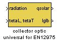
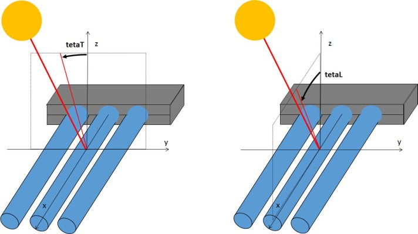

IAM Table KbL KbT
Path: CARNOT/Source/Solar_Thermal/IncidenceAngleModifier
Purpose
FOR THE "Collector_EN12975" MODEL.
Transforms incoming direct and diffuse
radiation to an absorbed solar power per unit area.
Description
The direct radiation incidence angle modifier (KbT and KbL) uses the 2-dimensional table model from EN 12975.
The incidence angle modifier Kdir is dependant on the angle teta(L) and teta(T).
Kdir = Kb(L)*Kb(T)
where Kb(L) and Kb(T) are given in lookup-tables in dependancy of teta(L) and teta(T).
For diffuse radiation the incidence angle modifier is Kdfu = constant (at 50° incidence angle).
The Fin Efficiency * Transmittance * Absorbtance "FTA" or F'(TauAlfa) is defined from the incidence angle
modifiers Kdir and Kdfu:
FTA = eta0 / (Kdir(15°)*0.85 + Kdfu*0.15)
|
symbol |
used for |
unit |
|
tetaL |
vector with the angles for the longitudinal incidence angle modifier (used as vector for the input values in the lookup-table) |
degree |
|
tetaT |
vector with the angles for the transversal incidence angle modifier (used as vector for the input values in the lookup-table) |
degree |
|
KbL |
lookup table data vector for longitudinal incidence angle modifier |
|
|
KbT |
lookup table data vector for transversal incidence angle modifier |
|
|
Kd |
incidence angle modifier for diffuse solar radiation |
|
Inputs:

Parameters and Dialog Box
Literature
EN 12975 Solar thermal Collectors
Characteristics
Direct Feedthrough Yes
Sample
time
Inherited
from driving block
States
none
Vectorized
No